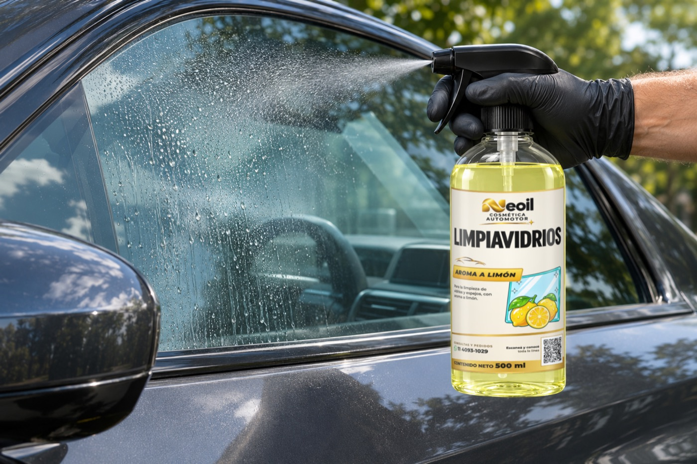

Cristales
Limpiavidrios.
Para la limpieza de vidrios y espejos, con aroma a limón.
Contenido neto: 500 ml
Consultar por WhatsApp
Presentación.

Para qué sirve.
- Limpiar vidrios y parabrisas.
- Limpiar espejos.
- Mejorar la visibilidad al manejar.
Cómo se usa.
- Rociá sobre el vidrio.
- Pasá un paño de microfibra limpio.
- Repasá con un paño seco para terminar.